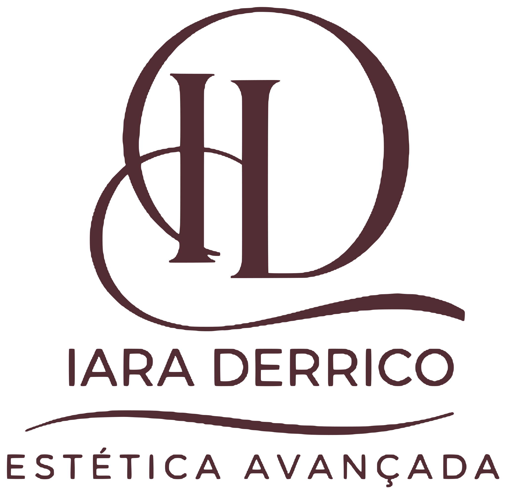

Logo (vetor)


O que a pasta mostrou e como virou regra: a linguagem das artes dela (dourado metálico, serifa de alto contraste, medalhões, divisor com losango, faixa oliva e barra com lótus) aplicada ao site.


Invista em você,
revele sua melhor versão!
Um CTA por dobra. Sem preço, antes e depois ou promessa de resultado. Toxina botulínica fora do site até a revisão pelas regras de publicidade. Foto de paciente só com autorização. Animações desligadas com prefers-reduced-motion.